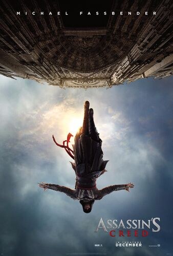

Assassin's Creed
5.8/10

Director: Justin Kurzel
Producer: Jean-Julien Baronnet, Partick Crowley, Michael Fassbender, Frank Marshall, Conor McCaughan, Arnon Milchan
Writer: Bill Collage, Adam Cooper, Scott Frank, Micheal Lesslie
Starring: Michael Fassbender, Marion Cotillard, Jeremy Irons, Brendan Gleeson, Michael K. Williams
Plot
In 1492 Andalusia, during the Granada War, Aguilar de Nerha is accepted into the Assassins Brotherhood. He is assigned to protect Prince Ahmed de Granada from the Knights Templar. In 1986, adolescent Callum "Cal" Lynch finds his mother killed by his father, Joseph, a modern-day Assassin. Gunmen led by Alan Rikkin, CEO of the Templars' Abstergo Foundation, arrive to capture Joseph, who convinces his son to escape.In 2016, Cal is sentenced to death for murdering a pimp, but his execution is faked by the Abstergo Foundation, which then takes him to their research facility in Madrid. He is told that the Templars are searching for the Apple of Eden, in order to eliminate violence by using the Apple's code to control humanity's free will. Sofia, Alan's daughter and the head scientist, reveals that Cal is a descendant of Aguilar, the last person confirmed to be in possession of the Apple. She puts Cal in the Animus, a machine which allows him to relive (and the scientists to observe) Aguilar's genetic memories, so that Abstergo can learn what he did with the Apple.